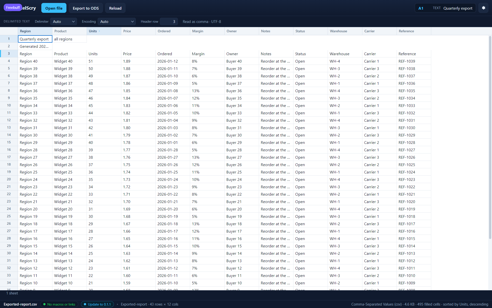

<!doctype html>
<meta charset="utf-8">
<title>ExcelScry — ordering a table by one of its columns</title>
<style>
  body { margin: 0; background: #1b1d22; color: #c9cdd6;
         font: 14px/1.5 Segoe UI, system-ui, sans-serif; }
  figure { margin: 0; }
  img { display: block; width: 100%; height: auto; }
  figcaption { padding: 12px 16px; }
  code { color: #8fd3ff; }
</style>
<figure>
  
  <figcaption>
    The records are ordered by <code>Units</code>, highest first. Clicking that
    column's name in the strip sorted them by it; clicking it a second time
    reversed the order, and the arrow in the head says which one is showing.
    <code>Units</code> begins at 51 and falls from there, and every other field
    travelled with its own record — <code>Region 40</code> still reads
    <code>Widget 40</code>, <code>1.89</code> and <code>Buyer 40</code> beside
    it. The title on row 1 and the note on row 2 kept their places: the rows
    below the pinned header are the records, and everything above it is the
    document that holds them. Numbers compare as numbers, so sorting
    <code>Units</code> puts 9 before 10 rather than after it; text compares
    without regard to case; and a blank field sorts last whichever direction is
    asked for, the way a spreadsheet does it. The status bar repeats the order
    the table is in. Nothing is written back: the file on disk keeps the order
    it arrived with, and a reload reads it that way. (Shown in the UI harness,
    whose <code>#preamble</code> file carries a title and a note above its
    column names, and whose records are what the sort moved.)
  </figcaption>
</figure>
